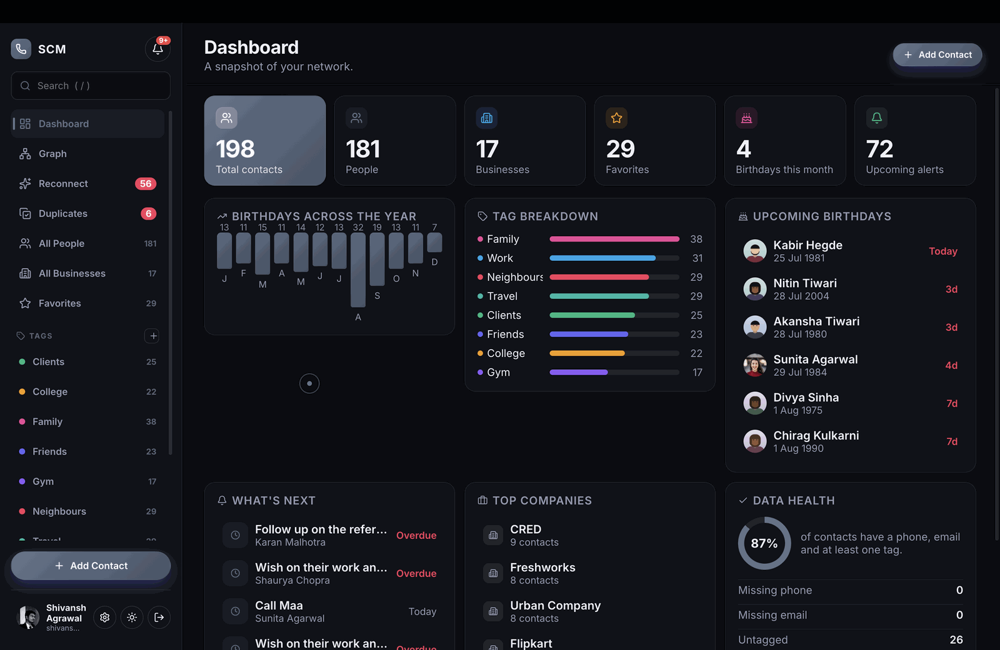
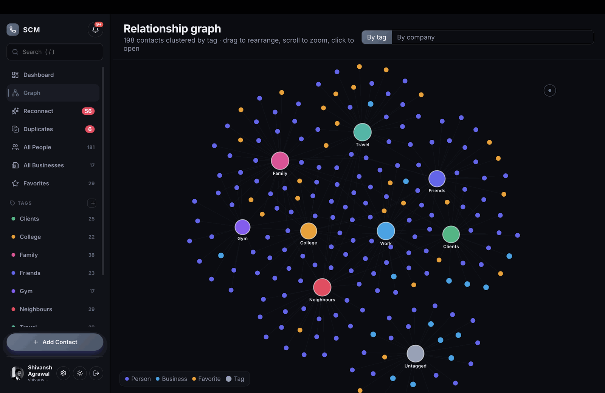
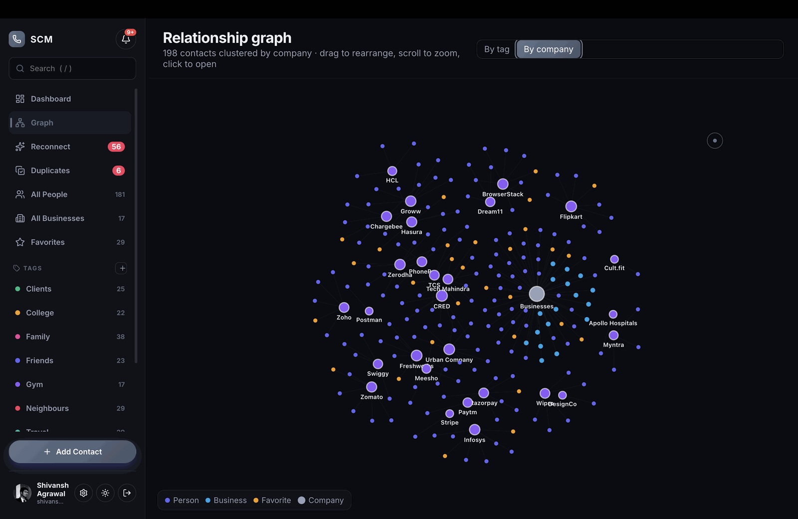
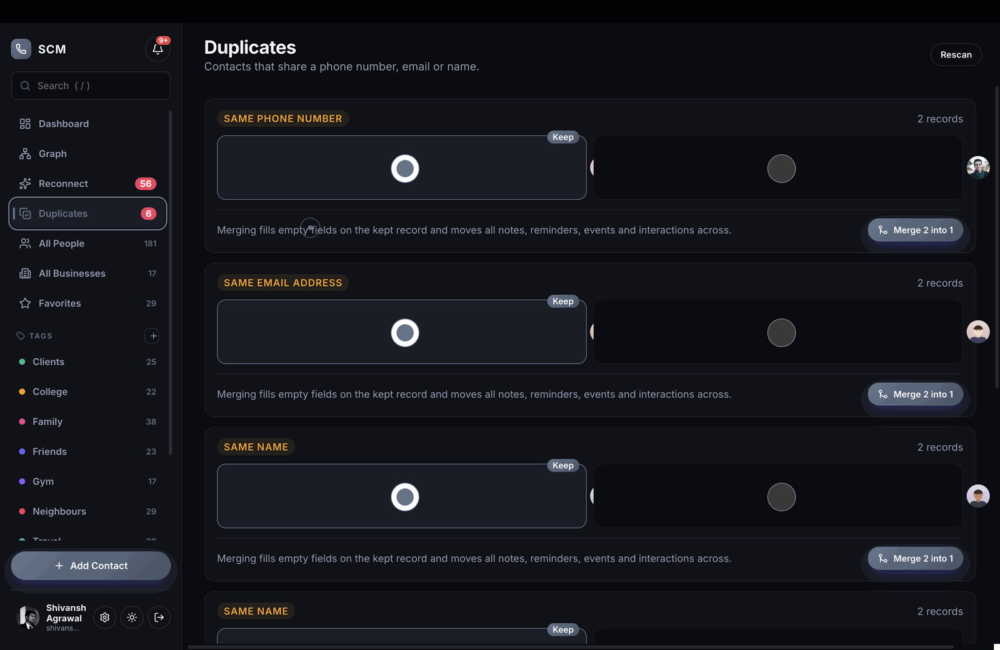
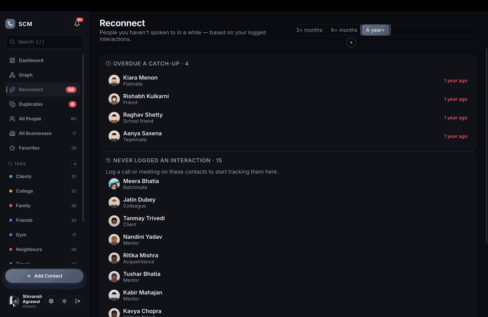
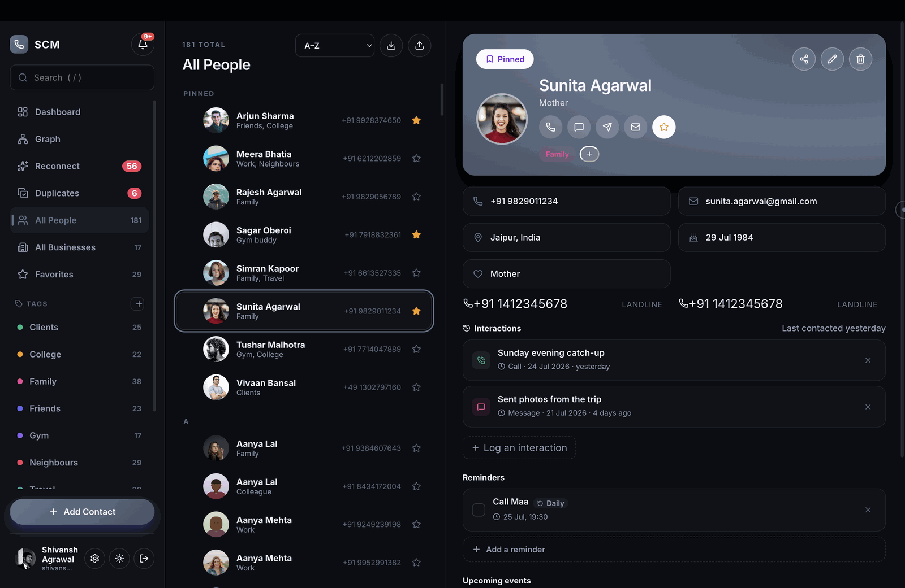
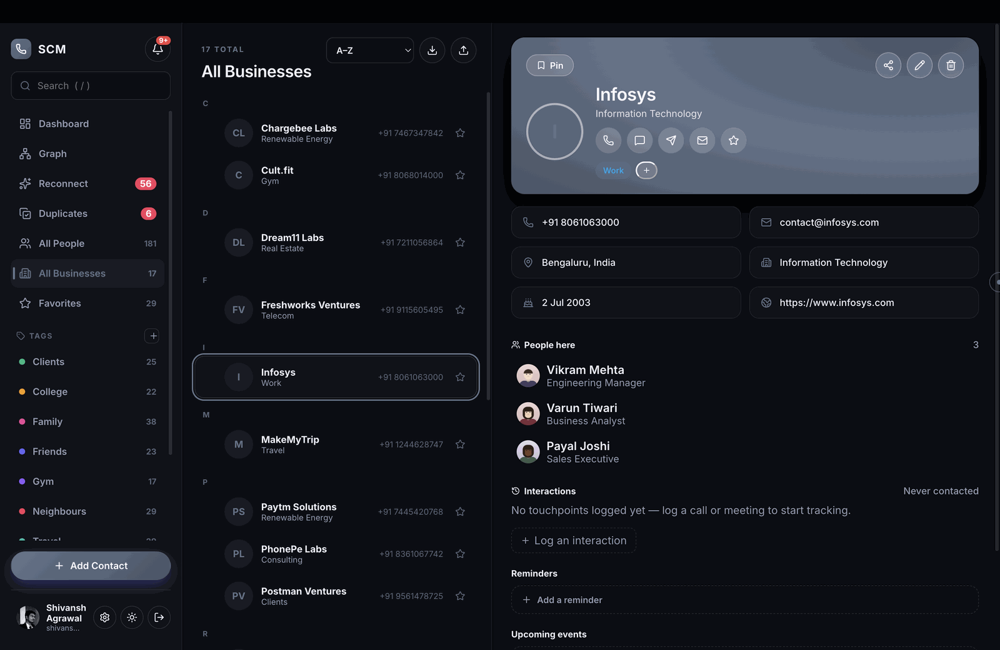
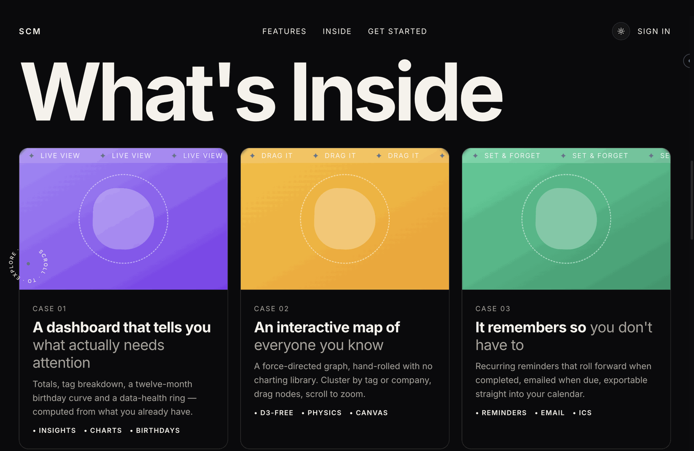

CASE STUDY 04 - FULL-STACK PRODUCT
Smart Contact Manager
A production-style contact intelligence platform built to do more than store names. It detects duplicate records, shows who you are losing touch with, maps relationship clusters, automates tagging and reminders, and protects the account with serious authentication and endpoint ownership checks.

OVERVIEW
A contact app that understands relationships, not just records.
Most contact managers stop at CRUD and search. I built Smart Contact Manager around the workflows that make a contact system useful in real life: detecting duplicates before the address book becomes messy, surfacing people you have not spoken to recently, grouping contacts by business context, and keeping reminders, notes, events and interaction history connected to each person.
The project is deployed as a full-stack product. Vite builds the React frontend into Spring Boot static resources, Spring serves the app and API from the same origin, and Docker brings up the app with MySQL for a production-shaped local or hosted environment.
PRODUCT DEPTH
The features that make it more than a CRUD app.
Merge without losing history
Contacts are grouped by phone, email and normalized names. During merge, notes, reminders, events and interactions are moved onto the surviving contact.
Know who is going cold
The reconnect view ranks contacts by how long it has been since the last interaction, with a threshold visitors can tune.
Canvas relationship map
A force-directed graph clusters contacts by tag or company, with drag, pan, zoom and profile drill-down built without D3.
Rule-based tags
Tags can carry rules such as company matching, and the app applies them automatically when a contact is saved.
Import, export and share
CSV import/export, vCard and QR sharing, printable directories and calendar exports make the data portable.
Public product demo
The live Railway deployment includes a shared demo account with 200 seeded contacts that resets cleanly after restart.
SCREENSHOTS
Important screens from the shipped app.







SECURITY
Security work that is visible in the code.
- TOTP two-factor authentication implemented from RFC 6238 with HMAC-SHA1, Base32 secrets and constant-time comparison.
- Two-layer brute-force protection: per-account lockout plus per-IP sliding-window failure limits.
- Ownership checks across contacts, notes, reminders, events and tags so users cannot access another account's records.
- Upload validation checks real image magic bytes instead of trusting extensions or browser MIME types.
- Hardened cookies and headers, including HttpOnly, SameSite, Secure in production, CSP, HSTS and frame protection.
- BCrypt password hashing, email verification, expiring reset tokens and soft delete with scheduled purge.
ARCHITECTURE
One deployable system, cleanly layered.
The frontend is compiled into the backend, so the app ships as a single Spring Boot jar on one origin. That avoids CORS setup, cross-site cookie problems and preflight overhead for normal writes.
Spring Boot 3.4.4, Java 21, Spring Security, Spring Data JPA, Hibernate 6.6, Maven
React 19, Vite 7, plain CSS custom properties, lucide-react
MySQL 8 in production-shaped setup, with H2 and PostgreSQL drivers available via environment config
Session-based login, email verification, Google/GitHub OAuth2 and TOTP 2FA
Docker multi-stage build, docker-compose, Railway deployment and GitHub Actions CI
Unit tests for TOTP and recurring reminders, plus HTTP smoke tests for auth boundaries and contact workflows
The UI is intentionally custom-built rather than assembled from a component framework, including the relationship graph, landing-page constellation animation and resizable app panes.
IMPLEMENTATION DETAILS
Engineering choices worth discussing.
- Duplicate merging: union-find groups duplicate candidates, then re-parents child records before deleting the duplicate contact.
- Relationship graph: hand-built canvas physics with node repulsion, spring attraction, damping, drag, pan and zoom.
- Reminder scheduling: recurring reminder roll-forward logic handles overdue reminders by skipping ahead correctly.
- Demo seeding: public demo mode creates a resettable 200-contact account, while new signups can receive a 24-contact starter set.
- Portable configuration: database, cookie, OAuth, mail and demo settings are all environment-driven.
- Production shape: Docker starts MySQL, backend and frontend together, and CI builds frontend, backend and Docker image.